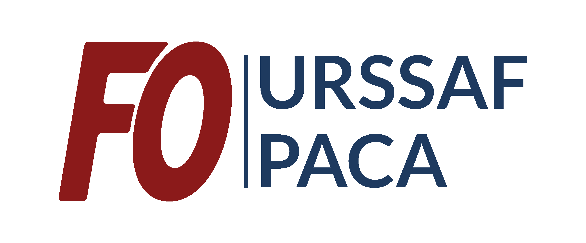

Accord FMD 2025, durée 3 ans. Favoriser les transports doux et écologiques.
✊ Réalisé par FO URSSAF PACA — Votre syndicat vous informe et vous défendUne question sur le forfait mobilités durables ou vos remboursements ? Contactez vos délégués FO pour être accompagné(e).
Le forfait couvre uniquement les trajets domicile-travail depuis votre résidence habituelle déclarée à l'employeur.
Les déplacements entre lieux de travail sont assurés par l'URSSAF PACA via la flotte automobile.
* Hors abonnements (pris en charge par ailleurs)
Véhicule de service ou de fonction • Véhicule personnel thermique (hors covoiturage) • Abonnements transports en commun
| Nb jours d'utilisation/an | ≥ 150 | 110–149 | 80–109 | 50–79 | 20–49 |
|---|---|---|---|---|---|
| Montant | 600€ | 450€ | 300€ | 150€ | 75€ |
Il faut au moins 20 jours d'utilisation par an pour ouvrir droit au forfait.
Le versement transport de 4€ • Une place de parking nominative • La prise en charge des frais réels de parking
Si votre temps de travail est inférieur à 50% de la durée légale, le forfait est calculé au prorata.
Pour chaque mode, fournissez une déclaration sur l'honneur mensuelle.
La Direction peut effectuer des contrôles. Toute fausse déclaration expose à des sanctions disciplinaires.
Le forfait de l'année N est versé en février de l'année N+1.
En cas de rupture du contrat, le forfait est versé lors de la liquidation des droits.
Le FMD traduit la volonté de l'URSSAF PACA et des organisations syndicales de favoriser les transports doux pour réduire les émissions de gaz à effet de serre.